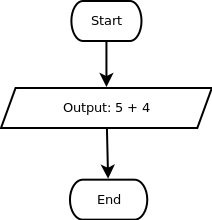

Untuk tipe data angka (integer, float, dan double), kamu dapat melakukan operasi penjumlahan, pengurangan, perkalian, dan pembagian. Beberapa bahasa pemrograman juga mengijinkan operasi pemangkatan, sedangkan beberapa yang lain menggunakan fungsi pow yang merupakan kepanjangan dari "power".
Untuk melakukan operasi aritmetik (+, -, *, /, ^), kamu bisa memilih kategori Operations dan memilih blok 1 + 1. Kamu juga bisa menekan tanda segitiga di samping simbol + dan memilih operasi sesuai dengan keinginanmu.
Hasil operasi aritmetik pada dua buah angka akan menghasilkan angka juga. Contoh: 5+4 = 9. Data 5, 4, dan 9 masing-masing adalah angka.
